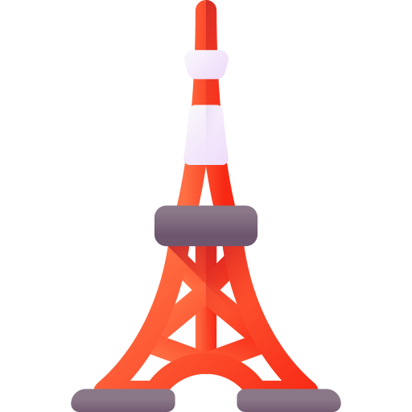

Estudiar Japonés
Dependiendo de tu lengua madre, el estudio de este idioma puede ser mas complicado para algunos. Para los que hablamos español, puede resultar un verdadero reto.
No sólo nos enfrentamos a escritura completamente distinta, con 3 alfabetos: Hiragana, Katakana y Kanji, sino también a una estructura gramatical completamente contraria a la nuestra.
Otro de los desafios que se nos presentan a los que no vivimos en Japon es la falta de contacto con el idioma en nuestra vida diaria. Por esa razon va a quedar en nosotros el buscar la manera de consumir contenido en idioma japones para generar el habito de la costumbre y practicar un poco a diario.
Hay una forma efectiva de aprender?
No hay una respuesta facil a esta pregunta, creo que cada uno debe ir haciendo su camino en base a lo que nos interesa. Es mucho mas efectivo aprender cuando estamos interesados en algun tema en especial.
No todo es color de rosas por lo que si o si vas a necesitar un tipo de educación o guía formal, con una estructura que te permita realizar tu camino en etapas, aprendiendo con la ayuda de libros de texto muy conocidos y efectivos que tratan temas variados y te acercan a la cultura del idioma.
A medida que tu educación formal (por libros de texto mas clases, o autodidacta), empieza a complementar tu aprendisaje con contenido específico de temas que te interesan o que quieres aprender.
Aprender un idioma es abrir la ventana a un nuevo mundo
Es sin duda una de mis frases favoritas y lo que me motiva día a día a seguir aprendiendo. Si eres como yo, que siento mucha fascinación por el idioma, cultura y todo lo relacionado a Japón, seguro te interesa alguna de estas categorías.
Lengua y cultura japonesa


Para los hispanohablantes, y creo que para los occidentales en general, ver caracteres o letras distintas a las del alfabeto romano produce curiosidad. Lo mismo nos ocurre con la cultura oriental.
Entretenimiento


Manga, anime, videojuegos, peliculas, novelas, y la lista sigue. En la última década ha sido más fácil acceder a contenido en Japonés, pero aún queda mucho contenido por descubrir que no ha sido traducido.
Comida, viajes y mas

- 


Viajar a Japón, perderse por las calles de Tokyo, animarse a viajar mas allá de un punto turístico y caminar entre los locales, entrar a un restaurant donde sólo tienen menú en japonés, conocer nuevos amigos!
Sube las escaleras hacia tu objetivo
El éxito no viene fácil, debes estar preparado para alcanzarlo. Estudiar japonés me recuerda al Templo Atago, ubicado en Tokio. Para alcanzarlo, debes primero subir unos 86 empinados escalones, llamados "los escalones para el éxito".
Asimismo, los estudiantes de japonés subimos escalones cada vez que aprendemos algo nuevo o pasamos al siguiente nivel del JLPT.
He subido esas escaleras en mi último viaje a Japón, antes del covid. Esta foto la he tomado antes de subir. Desde abajo parece muy intimidante, sobre todo si no tienes el estado físico apropiado.
A diferencia de la acción literal de subir escaleras, aprender un idioma es divertido! Sí, reconozco que van a haber etapas donde vas a sufrir o frustrarte, pero es parte de tu camino tambien, y hay que aprender a aceptar que nuestros tiempos son distintos al resto, igual que nuestra manera única de aprender.
Te invito a que te animes a subir las escaleras tambien, y cada tanto te detengas a mirar hacia atrás, te sorprenderás de ver cuánto has avanzado!
Mapa del sitio
Este sitio esta dividido por dos grandes categorias: JLPT y Aprender Japones. Tecnicamente las dos implican estudio del idioma pero la manera de estudiar es diferente.
-
üìñ JLPT: Cuento mi experiencia sobre el estudio espec√≠fico de japon√©s para rendir el examen JLPT, rese√±as de libros que me han servido para aprobar desde el nivel básico al avanzado N2. Actualmente me encuentro estudiando para rendir en un futuro el N1.
- Niveles 4 y 5
- Nivel 3
- Nivel 2
- Nivel 1
- Diccionarios
-
üáØüáµ Practicar Japones: No todo es estudiar para el examen internacional, los motivos para los cuales queremos aprender el idioma son varios. Creo que este punto es muy importante porque podemos estar en contacto con el idioma y aprender al mismo tiempo. (No todos los temas están listos aún.)
- Leer: mangas y novelas
- Mirar: animes, peliculas y doramas
- Jugar: videojuegos que pueden servirte para practicar
- Escuchar: musica y podcasts
üìî T√©cnicas de Estudio : Te comparto lo que me ha servido a mi a la hora de estudiar.
✈️ Viajar a Japón : Conoce quién está detrás de esta página.
üßë‚Äçüíª Sobre mi: Conoce qui√©n está detrás de esta página.
Disclaimer ⚠️
Las reviews que comparto son en base a mi experiencia personal utilizando dicho material para estudiar Japonés y de ninguna manera pretendo tener todas las respuestas ni pretendo que este sitio sea tomado como una guía oficial. Espero que mi experiencia te ayude a la hora de elegir el metodo de estudio o libro indicado para ti.